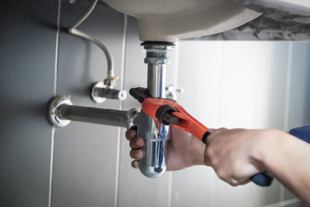
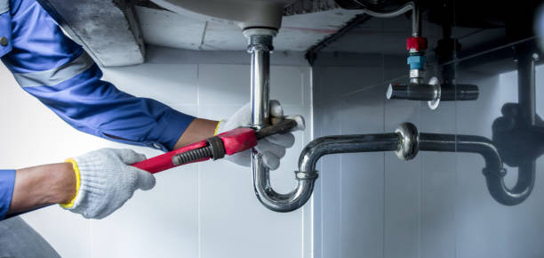
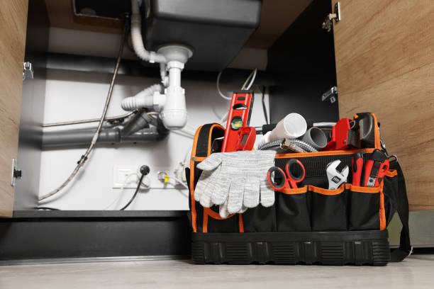

We specialize in: - Emergency plumbing with fast response times - Leak repairs to save water and prevent damage - Geyser installations and maintenance - Bathroom remodeling and installations - All general plumbing maintenance
Your Trusted Plumber in the Helderberg Area Kuhn Plumbing has been proudly serving the Helderberg region, including Strand, Gordon’s Bay, Rooiels, and Pringle Bay.
We’re your reliable, local plumber near me — ready to help with everything from urgent emergencies to long‑term bathroom installations.
No matter the size of the job, our friendly team is here to provide professional service you can trust. Why Choose Kuhn Plumbing? - 10 years of experience in the Helderberg area - Friendly, approachable service — we treat every home like our own - Skilled in both quick fixes and full bathroom installations - Local expertise: we know the plumbing needs of Strand, Gordon’s Bay, Rooiels, and Pringle Bay
We provide professional plumbing services with fast response times and reliable workmanship.
Phone: 083 750 6780
Email: kuhnolivierplumbing@gmail.com
Fill in the form below and we’ll get back to you with a free estimate.